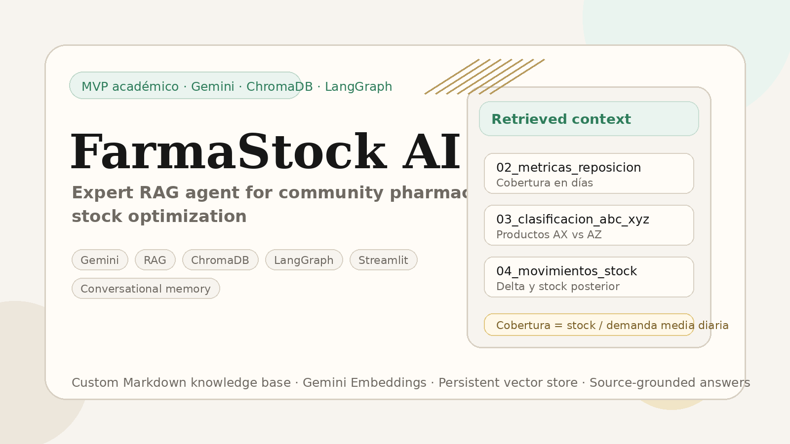
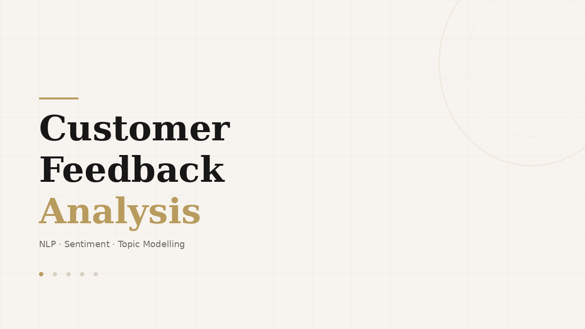
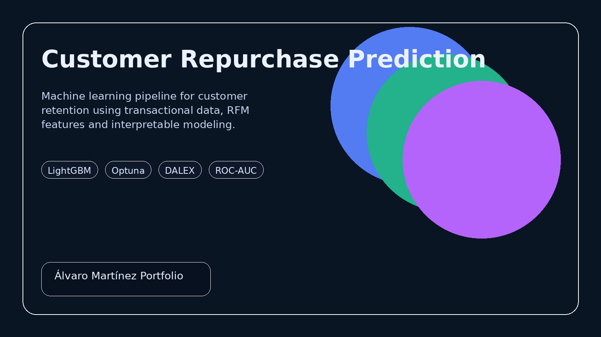

Data science and AI projects with a business-driven mindset.
Machine learning, NLP and analytics projects focused on real-world problem solving and business impact.
Featured projects
Selected case studies in machine learning, NLP and custom-data analysis.

FarmaStock AI
Expert assistant built with Gemini, ChromaDB, LangGraph and Streamlit to answer inventory optimization questions in community pharmacy.

Customer Feedback Analysis
Review analysis pipeline built to identify the operational issues driving dissatisfaction and translate them into business recommendations.

Customer Repurchase Prediction
Retention-focused ML project using transactional data, RFM features, LightGBM optimisation and interpretable outputs.
Analytics & data visualization
Selected dashboards focused on competitive analytics and modern BI workflows.

Clash of Clans — War Insights
Dashboard analyzing player performance, efficiency and strategic trends using competitive gaming data.

Fabric Analytics Project
End-to-end analytics project built with Microsoft Fabric and Power BI, from preparation to interactive reporting.